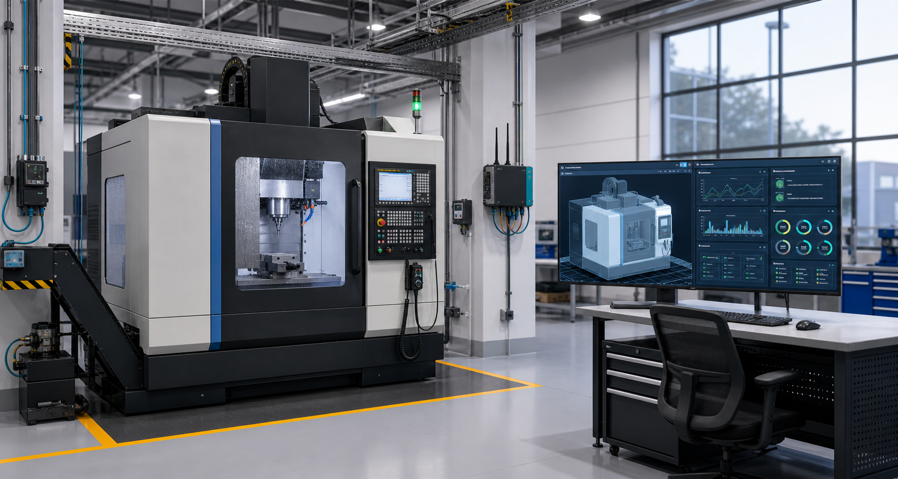

Physical CNC cell
Digital replica
02
Connect the factory floor
Trace the digital thread across the plant — PLM, MES, and QMS systems of record, the machine floor, and the live twin.
Factory floor · digital thread
How information moves across the plant
Design & process plan
Production order (MES)
Machine / robot telemetry
Inspection & quality
Platform transport
Change / feedback loop
Part / material flow
CNC machining center
waiting for telemetrySelect any station on the floor to trace its role in the digital thread.
- Interface / protocol
- MTConnect adapter or OPC UA server on the cell edge computer.
- Watch for
- Controller overrides or missing context can make good data misleading.
03
Measure the process
Inspect the data envelope and the sensor signals that make the twin trustworthy.
Protocol lab
Live packet inspector
Telemetry streaming
MQTT publish/subscribe
MQTT moves lightweight machine events from an edge gateway to subscribers such as the digital twin, dashboard, and storage services.
- Function
- Publish each CNC event to a topic so multiple systems can consume the same telemetry stream.
- In this platform
- The topic names the asset and the payload carries timestamped process signals, quality, model expectations, and detection state.
Waiting for telemetry packet...
Sensor layer
CNC signals used by the twin
- Expected range
- Select a signal.
- Used for
- Signal explanation appears here.
- Failure mode
- Missing or stale data reduces twin trust.
04
Replace simulation with reality
Separate what the simulator teaches from how a plant would collect real data.
Data source option
Synthetic stream or real machine telemetry
The current demo uses deterministic synthetic CNC events so the full twin workflow is repeatable, explainable, and easy to validate.
- Simulator creates warmup, roughing, finishing, and inspection phases.
- Known anomaly windows make chatter, tool wear, drift, feed mismatch, and dropout explainable.
- The same event schema can receive real machine data later.
Real collection stack
How real CNC data would enter the twin
Controller data first
Start with the CNC controller because it already knows program, feed, speed, alarms, overrides, tool number, axis position, and spindle load.
- Signals
- Program, operation, feed, speed, load, tool, alarms, axis position.
- Interface
- MTConnect adapter, OPC UA server, controller API, or vendor gateway.
- Engineering note
- Controller data is necessary, but it may not directly measure chatter, thermal drift, or fixturing problems.
05
Run the CNC case study
Compare the real process state with the expected process model.
CNC machining case study
Bracket milling cycle
Warmup
Roughing
Finishing
Inspection
Nominal process
The same CNC cycle runs as a physical process and as a live digital replica. The twin compares load, thermal behavior, vibration, feed, and tool-wear evidence before recommending action.
Physical process simulation
Part being cut in the CNC cell
- Cut progress
- 0%
- Tool position
- X 0.0 / Y 0.0
- Material removal
- No active cut.
- Chip/load state
- Waiting for telemetry.
Load model
actual vs expectedThermal model
actual vs expectedVibration
chatter signal
06
Turn evidence into action
Use severity, confidence, and required checks before changing the process.
Decision support
Human-in-the-loop action
Proceed
Continue process under nominal monitoring.
- Required check
- No additional check required.
- Rationale
- Signals are inside expected process limits.
Anomaly evidence
0 active- Waiting for process data.
Latest event
engineering values
RPM0
Feed0 mm/min
Load0%
Temp0 C
Vibration0.00
Tool wear0%